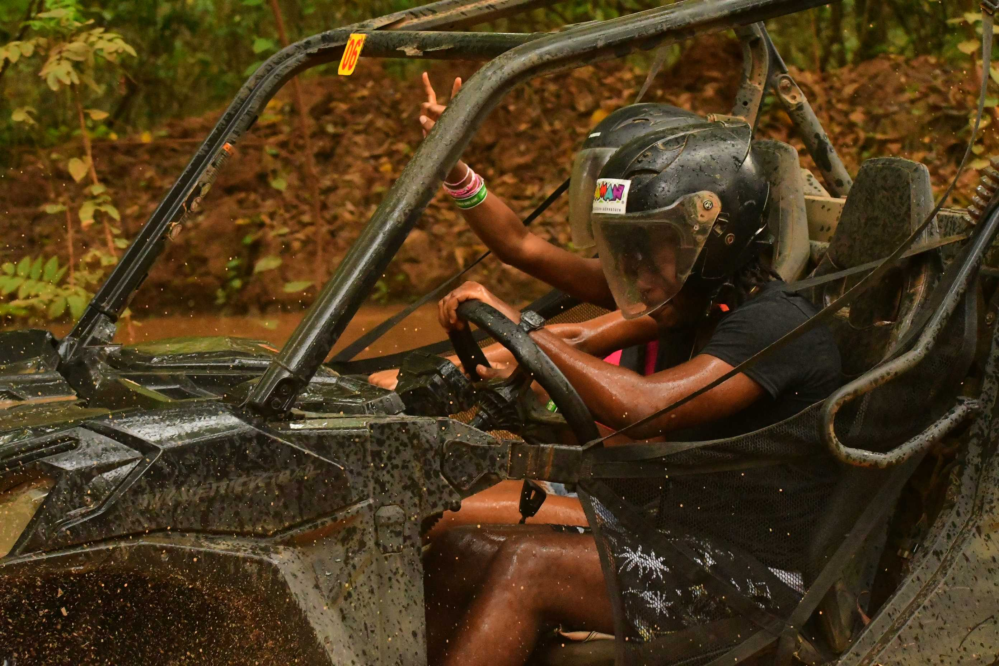

Web Developer Resume

Objective
Performing at the highest level with efficiency and creativity, and in turn to improve my level of professionalism.
Qualifications
- Bachelor's Degree in Computer Science 2016
- University of Technology
- 237 Old Hope Road, Kingston
- Associate Degree in Modular Computer Studies 2014
- 1 Alice Eldemire Drive
- Montego Bay Community College
- Montego Bay, St.James
Experience
- Heart College of Innovation & Technology 2022-Present
Skills
- Time Management
- Team Player
- Problem Solving
- Attention to Detail
- Creative
Hobbies Page
Contact Page